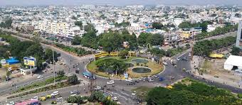
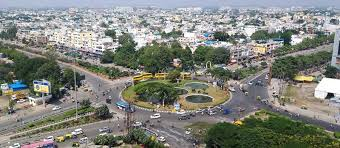

| Madhya pradesh |
A glimpse into India’s heart
In the heart of India lies a realm where history
whispers through ancient corridors, where
nature's beauty reigns supreme, and where vibrant cultures flourish in
harmony with the land. |
Madhya pradesh |
| RAJASTHAN |
History painted by the sands
Rajasthan, known as the "Land of Kings" and India's largest desert state, is a captivating
destination in northern India that mesmerise travellers from around the world.
The state presents a harmonious blend of
lively cities, hospitable locals, exquisite cuisine, majestic palaces, and grand forts. |
Rajasthan |
| UTTAR PRADESH |
A journey through time, culture, and spirituality!
Uttar Pradesh, the heartland of India, awaits travellers with a treasure trove of experiences and landmarks.
This sprawling state is a testament to India's rich heritage, boasting 3 UNESCO World Heritage Sites -
the majestic Taj Mahal, Fatehpur Sikri and Agra Fort |
Uttar [pradesh |
| PUNJAB |
The land where rivers flow, and history unfolds
In the northwest region of India, lies the state of Punjab, a vibrant
and culturally diverse land that offers heritage,
a bounty of nature, and an array of experiences to enthral every traveller. |
Pnjab |
| JAMMU & KASHMIR |
Welcome to the Switzerland of India
Experience the enchanting allure of Jammu and Kashmir, where each season unfurls
its own magnificent wonders. While the renowned destinations of Gulmarg, Pahalgam, and Srinagar
boast their charm, the true essence of Kashmir resides in the tranquil embrace of its lesser-known treasures.
Beyond the clamour of tourist hotspots, lie the untouched gems that can make a special place in any traveller’s heart.
Explore the north of the capital to discover the breathtaking Gurez Valley, the serene Bangus Valley,
and the pristine river Kishanganga. |
JAMMU & KASHMIR |
- Indore
Indore is a city in the state of Madhya Pradesh in India. It is the largest city in Madhya Pradesh.[1] It is 190 km away from Bhopal, which is the capital city of Madhya Pradesh.
The lifestyle of people of Indore is similar to Mumbai and also Indore is a rich city like Mumbai. So, Indore is also called "Mini Mumbai" (small Mumbai).[2]
Indore
 image of indore

image of indore

- Bhopal
Bhopal is the capital of Madhya Pradesh, India, and the second largest city of the state, after Indore. Bhopal is also called the City of Lakes.[1] It is the headquarters of Bhopal District. It is in the central part of India.
The city is believed to have first been called Bhojpal, named after the King of Bhoj. According to this theory, it was later changed to Bhopal.
Bhopal has an average elevation of 499 metres (1637 ft).


- Gwalior
The area in which Gwalior is situated was the core of Gwalior princely state.
That state was once the domain of the Sindhia family, a Maratha dynasty that controlled much of
northwestern India during the second half of the 18th century. The foundations of the Gwalior state were laid by Ranoji Sindhia about 1745, and the state reached its greatest extent under Sindhia Mahadaji (reigned 1761–94). Mahadaji was the ruler of a vast territory that included parts of central India and Hindustan proper (northern India), while his officers exacted tribute from
the principal Rajput rulers, including those of Jaipur and Jodhpur.
- JAIPUR
Jaipur, city, capital of Rajasthan state, northwestern India.
It is situated in the east-central part of the state, roughly equidistant from Alwar (northeast)
and Ajmer (southwest). It is Rajasthan’s most-populous city .
Hawa Mahal
Hawa MahalHawa Mahal (Hall of Winds), Jaipur, Rajasthan, India.
A walled town surrounded (except to the south) by hills, the city was founded in 1727
by Maharaja Sawai Jai Singh to replace nearby Amber (now Amer, a part of Jaipur)
as the capital of the princely state of Jaipur (founded by the Rajputs in the 12th century ce).
Jaipur grew dramatically in size in the late 20th and early 21st centuries, doubling its population
between 1991 and 2011. It has a mixed Hindu-Muslim population. The city was the site of numerous bombing attacks
in the early 21st century, with mosques and Hindu temples being targets.
Incredible jaipur
- JAISALMER
Desert magic in the heart of Thar
Welcome to Jaisalmer, the ‘Golden City’ of India, where time seems to have stood still and history is brought to life.
This enchanting city located in the heart of the Thar Desert, is a traveller's delight
with grand fortresses, ancient temples, tranquil lakes, and mesmerising sand dunes.
Steeped in rich cultural heritage, Jaisalmer exudes an old-world charm that is hard to resist.
incredible Jaisalmer


- JODHPUR
Nestled in the heart of the Thar Desert in the royal state of Rajasthan, India, lies the enchanting city of Jodhpur,
often referred to as the "Blue City" and the "Sun City." Steeped in history, culture, and architectural splendour,
Jodhpur beckons travellers from far and wide with its majestic forts,
vibrant bazaars, and timeless charm.